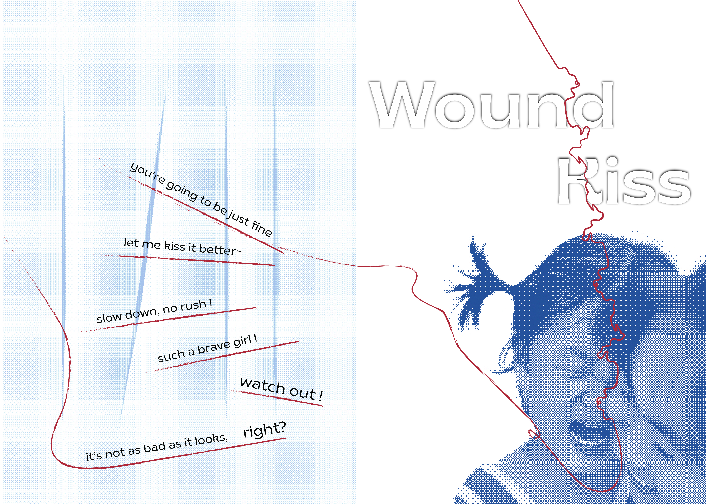
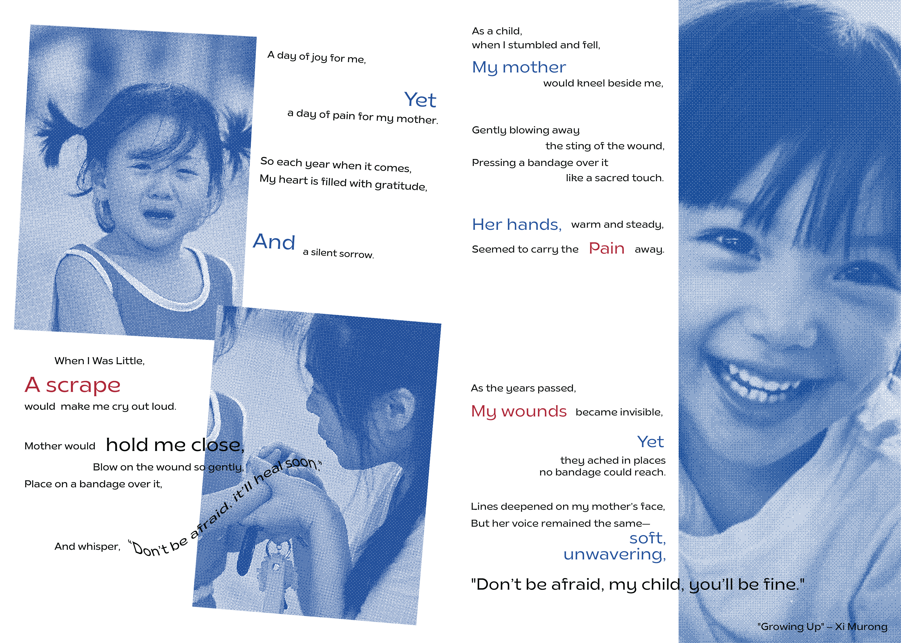

Brochure Design - Wound Kiss
This project responds to a brief that asked for the creation of a four-page brochure — including a front cover, back cover, and two interior pages — derived from a given object. The assigned object was a bandage. Rather than approaching it as a purely functional item, I understood it as a symbol — one tied to childhood, care, and the experience of being hurt. Growing up, moments of “wound,” whether physical or emotional, were often met by my mother’s composed and measured voice. She offered comfort, but also distance — framing pain as something to be understood, not avoided. What I once perceived as detachment gradually unfolded into a deeper form of care.
The project reflects this shift, exploring the space between injury and understanding, and the evolving meaning of healing across time.

Brochure — front & back covers.

Interior pages of the brochure.